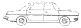
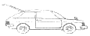
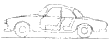
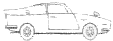
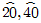
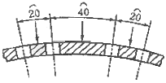

자동차차체수리기능사 (2015-10-10 기출문제)
1과목: 자동차공학
1. 충격량의 크기와 물체의 운동량 변화에 대한 설명으로 틀린 것은?
- 충격량과 운동량은 모두 벡터량 이다.
- 시간을 길게 해도 충격량의 크기는 항상 같다.
- 충격량은 운동량의 변화와 같다.
- 충격량의 방향은 운동량 변화의 방향과 같다.
(정답률: 82%)

2. 편평 타이어의 특성으로 틀린 것은?
- 눈길에서 체인을 사용하지 않는다.
- 숄더부까지 트레드 패턴이 배열되어 있다.
- 타이어 폭이 넓어 접지성이 좋다.
- 코너링 성능이 향상되어 일반타이어 보다 안전하다.
(정답률: 89%)
3. 배기관의 배압이 상승하는 원인으로 맞는 것은?
- 배기관이 막힘
- 오버사이즈 소음기
- 2개로 설치된 테일 파이프
- 새로 장착한 정품의 머플러
(정답률: 93%)
4. 자동차 방향지시등에 대한 설명으로 옳은 것은?
- 작동상태를 운전석에서 확인하지 못하는 구조로 되어있다.
- 방향지시등은 옆면에 설치되면 안된다.
- 방향지시등은 자동차의 진로 변경을 다른 자동차나 보행자에게 알려주기 위한 것이다.
- 등색은 녹색이어야만 한다.
(정답률: 91%)
5. 에너지 보존 법칙이라고도 하며 에너지는 형태가 변할 수 있을 뿐 새로 만들어지거나 없어질 수 없다고 정의한 법칙을 무엇이라고 하는가?
- 열역학 제 1 법칙
- 옴의 법칙
- 키르히호프의 법칙
- 보일-샤를의 법칙
(정답률: 83%)
6. 바퀴 정렬에서 토인 조정은 무엇으로 하는가?
- 타이로드
- 스트러트 바
- 컨트롤 암
- 스태빌라이저 바
(정답률: 87%)
7. 자동차의 차체 모양에 따른 분류로 해치백-세단(Hatch Back Sedan）의 형상은 어떤 것 인가?




(정답률: 78%)
8. 차체 재료에서 인장강도를 허용응력으로 나눈비를 무엇이라 하는가?
- 변형률
- 반력
- 안전율
- 전단력
(정답률: 71%)
9. 다음 중 온도단위가 절대온도, 섭씨온도, 화씨온도, 랭킨온도 순서대로 나열된 것은?
- ℃, R, K, °F
- K, ℃, °F, R
- R, K, ℃, °F
- °F, K, ℃, R
(정답률: 91%)
10. 모노코크 바디(monocoque body)의 각부 구조중 리어 바디(rear body)에 속하는 것은?
- 라디에이터 서포트(radiatot support)
- 프론트 휀더(front fender)
- 휀더 에이프런(fender apron)
- 트렁크 리드(trunk lid)
(정답률: 78%)
11. 도면에서 치수를 표기할 때 사용되는 보조 기호를 설명한 것으로 잘못된것은?
- ø 지름
- t : 작업시간
- (12) : 참고치수
- SR : 구의 반지름
(정답률: 78%)
12. 아연에 대한 설명중 틀린 것은?
- 산, 알칼리에서 부식을 촉진한다.
- 재결정은 가공도가 크면 실온에서 일어난다.
- 격자 상수는 조밀육방격자이다.
- 비중은 9.8이며 용융점은 320℃ 이다.
(정답률: 64%)
13. 인장강도가 낮은 재료인 주철, 석재 등을 연삭 할 때 사용하는 연삭 숫돌의 입자 기호는?
- A
- WA
- C
- GC
(정답률: 63%)
14. 열경화성 수지의 종류가 아닌 것은?
- 페놀
- 멜라닌
- 폴리에스테르
- 아크릴
(정답률: 59%)
15. 가스 용접 시 모재의 두께가 얼마 이하이면 용접이음에 개선면(beveling)이 필요 없는가?
- 1.2mm
- 2.2mm
- 3.2mm
- 4.2mm
(정답률: 50%)
16. 피복 아크 용접에서 용접 속도에 영향을 주는 요소가 아닌 것은?
- 용접봉의 종류
- 모재의 재질
- 용접 전압 값
- 이음의 모양
(정답률: 55%)
17. 자동차 타이어에 사용되지 않는 고무는?(오류 신고가 접수된 문제입니다. 반드시 정답과 해설을 확인하시기 바랍니다.)
- 합성고무
- 연질고무
- 천연고무
- 경질고무
(정답률: 51%)
18. 다음 설명 중 틀린 것은?
- 취성 : 와이어와 같이 늘어나기 쉬운 성질
- 인성 : 질기고 강인한 성질
- 전성 : 얇은 판으로 넓게 퍼지는 성질
- 연성 : 가늘게 늘어나기 쉬운 성질
(정답률: 81%)
19. 탄소강에서 냉간압연강판 표시기호는?
- SCP
- SHP
- SS
- SBB
(정답률: 75%)
20. 용접의 단점이 아닌 것은?
- 기계적인 성질이 변화하기 쉽다.
- 내부 응력이 발생되어 균열이 발생되기 쉽다.
- 리벳이음에 비해 기밀성과 수밀성이 우수하다.
- 작업자의 기능에 의해 영향을 받기 쉽다.
(정답률: 72%)
2과목: 자동차차체정비
21. 일반적인 금속의 특징 중 맞지 않는 것은?
- 최저 용융 온도의 금속은 Hg(-38.4℃), 최고 용융온도의 금속은 W(3410℃) 이다.
- 최소의 비중은 Li(0.53), 최대 비중은 Ir(22.5)이다.
- 일반적으로 용융 온도가 높으면 금속의 비중이 크다.
- 내열성과 경량성을 동시에 만족하는 재료를 얻기 쉽다.
(정답률: 80%)
22. 자동차에 사용하는 몰드의 역할로 적당하지 않은 것은?
- 차체 이음새 부분의 숨김
- 차체의 손상방지
- 물의 안내
- 차체 강도 증가
(정답률: 70%)
23. 도면에서

나타내는 것은?
- 현의 길이
- 원호의 길이
- 기울기
- 대칭
(정답률: 77%)
24. 탄산가스 아크 용접은 바람으로 인해 작업에 영향을 받는다. 바람의 속도가 얼마 이내 일 때 방풍장치 없이 작업이 가능한가?
- 1~2m/sec
- 3~4m/sec
- 5~6m/sec
- 7~8m/sec.
(정답률: 71%)
25. 주조용 알루미늄 합금 중에서 Al-Si계 합금은?
- 실루민
- Y합금
- 로엑스 합금
- 라우탈
(정답률: 79%)
26. 차체 수정 장비를 사용하는 인장 작업에서 차체를 고정하는 데 사용되는 공구는?
- 앵커
- 체인
- 클램프
- 프레임
(정답률: 77%)
27. 스프레이 부스의 설명 중 틀린 것은?
- 도막의 연마 분진을 필터로 여과하여 대기오염을 방지
- 도장작업 시 작업자의 안전을 위한 환기시설 설치
- 도장작업 시 비산된 도료를 필터로 여과하여 대기오염을 방지
- 도장작업에 적합한 온도 조절
(정답률: 62%)
28. 차체수리에서 바디 수정의 3요소에 해당되지 않는 것은?
- 고정
- 판넬 수정
- 인장
- 계측
(정답률: 70%)
29. 전면 충돌 사고로 사이드 멤버(side member), 펜더 에이프런(fender apron) 및 프론트 필러(front pillar)까지 손상된 승용자동차를 수리하기 위한 방법으로 올바른 것은?
- 바디프레임 수정기로 프런트 필러 변형부터 우선 수정 한 다음, 사이드 멤버를 수정한다.
- 차체를 고정하고 산소 용접기로 손상 부위를 가열한 후 타출 및 인장 작업을 하여 수정한다.
- 손상된 사이드 멤버와 펜더 에이프런을 절단한 후 프론트 필러를 당긴다.
- 바디프레임 수정기의 견인 장치로 펜더 에이프런과 사이드 멤버를 동시에 당긴다.
(정답률: 50%)
30. 프레임 기준선에 의하여 센터링 게이지로 변형 상태를 점검할 때 주의할 사항이 아닌 것은?
- 바디(body) 치수도를 활용할 것
- 계측기기의 손상이 없을 것
- 차체를 회전시키면서 점검할 것
- 수평으로 확실하게 고정할 것
(정답률: 89%)
31. 점용접의 3대 요소에 해당하지 않는 것은?
- 통전시간
- 전극의 가압력
- 용접전류
- 모재의 두께
(정답률: 62%)
32. 해머 머리에 까칠한 이가 붙어 있으며, 늘어난 철판을 수축 시키는 데 사용하는 해머는?
- 조르기 해머
- 고르기 해머
- 딘킹(dinking) 해머
- 리버스 커브(reverse curve) 해머
(정답률: 62%)
33. 판금가위중 비틀림 가위의 사용 용도는?
- 직선으로 자를 때
- 둥글게 자를 때
- 지그재그로 자를 때
- 직각으로 자를 때
(정답률: 78%)
34. 바디 프레임(body frame) 수정기의 종류에 속하지 않는 것은?
- 바닥형
- 이동식 벤치형
- 고정식 벤치형
- 슬라이드 해머식
(정답률: 83%)
35. 외부패널의 변형을 확인하는 방법 중 틀린 것은?
- 육안으로 확인한다.
- 가스 용접기로 예열해 본다.
- 손으로 직접 만져본다.
- 줄로 연마해 표면 상태를 본다.
(정답률: 78%)
36. 트램 트랙킹 게이지의 용도와 거리가 먼 것은?
- 대각선이나 특정 부위의 길이 측정
- 엔진 룸, 윈도우 부분의 개구부 변형 측정
- 좌우 비대칭 바디의 변형 측정
- 사이드멤버의 길이 측정
(정답률: 40%)
37. 판금의 전단가공 중에서 블랭킹(blanking) 작업과 반대되는 것은?
- 파팅(parting)
- 노칭(notching)
- 펀칭(punching)
- 트리밍(trimming)
(정답률: 75%)
38. 용제의 용해력에 따른 분류에 해당하지 않는 것은?
- 진용제
- 조용제
- 복합제
- 희석제
(정답률: 61%)
39. 모노코크 바디(monocoque body) 차량이 충격을 받았을 경우, 차실에 영향을 적게 미치도록 프레임에 부분적으로 굴곡을 두는 것은?
- 쿠션(cushion)
- 킥업(kick up)
- 댐퍼(damper .
- 스토퍼(stopper)
(정답률: 76%)
40. 자동차에서 도어의 구성요소가 아닌 것은?
- 후드
- 힌지
- 첵
- 로크
(정답률: 79%)
3과목: 안전관리
41. 차체 각부 높이의 이상상태를 점검하기 위한 기준면을 무엇이라고 하는가?
- 데이텀라인
- 레벨
- 센터라인
- 프레임
(정답률: 65%)
42. 차체 박판의 맞대기 용접 방법으로 옳은 것은?
- 단속적으로 용접한다.
- 스폿 용접으로 작업한다.
- 플러그 용접으로 작업한다.
- 패널 앞·뒤 모두 용접 한다.
(정답률: 51%)
43. 프레임의 중심부를 측정함으로써 프레임 상하, 좌우, 비틀림 변형 등의 이상 상태를 진단하는 게이지는?
- 프레임 체킹 게이지
- 프레임 프로 게이지
- 프레임 밴딩 게이지
- 프레임 센터링 게이지
(정답률: 81%)
44. 퍼티의 두께를 약 0.1~0.5mm 정도로 사용할 수 있으며 퍼티나 프라이머 서페이서 면의 기공 및 작은 상처를 수정하는 데 사용하는 퍼티는?
- 판금퍼티
- 폴리퍼티
- 아연퍼티
- 래커퍼티
(정답률: 67%)
45. 가스 절단 작업을 할 때 산소의 순도가 미치는 영향이 아닌 것은?(오류 신고가 접수된 문제입니다. 반드시 정답과 해설을 확인하시기 바랍니다.)
- 순도가 저하되면 절단 개시 시간이 짧아진다.
- 순도가 저하되면 절단 속도가 저하된다.
- 순도가 저하되면 산소 소비량이 많아진다.
- 순도가 높아지면 토치가 쉽게 막힌다.
(정답률: 51%)
46. 엔진 룸 사고수리 마무리 단계에서 외형 패널의 단차를 수정하기 위해 조절해야 할 부품이 아닌 것은?
- 프런트 휀더
- 후드 패널
- 범퍼
- 휠 하우스
(정답률: 74%)
47. 해머(hammer) 와 돌리(dolly)로 늘이기, 굽히기, 두들기기 작업을 하여 차량의 손상된 패널을 수정하는 것을 무엇이라 하는가?
- 성형 작업(forming)
- 타출 작업(beating)
- 밴딩 작업(bending)
- 시밍 작업(seaming)
(정답률: 62%)
48. 스프레이건과 피도물 사이의 거리로 가장 적당한 것은?
- 1~5cm
- 5~15cm
- 15~25cm
- 25~50cm
(정답률: 73%)
49. 광택 작업 시 유의사항 중 옳지 않은 것은?
- 각진 부위 및 모서리 부위를 작업할 때 다른 부위에 비해 힘을 더 가해야 한다.
- 광택제와 왁스의 흔적이 없도록 처리한다.
- 도막에 상처가 나지 않도록 주의한다.
- 요철이나 굴곡 부위에 도막의 벗겨짐이 없도록 한다.
(정답률: 90%)
50. 압축된 공기의 수분을 제거시키는 방법이 아닌 것은?
- 볼트를 조이는 방법
- 충돌판을 이용하는 방법
- 원심력을 이용하는 방법
- 필터 또는 약제를 사용하는 방법
(정답률: 72%)
51. 적외선 전구에 의한 화재 및 폭발할 위험성이 있는 경우와 거리가 먼 것은?
- 용제가 묻은 헝겊이나 마스킹 용지가 접촉한 경우
- 적외선 전구와 도장면이 필요이상으로 가까운 경우
- 상당한 고온으로 열량이 커진 경우
- 상온의 온도가 유지되는 장소에서 사용하는 경우
(정답률: 77%)
52. 탁상그라인더에서 공작물은 숫돌바퀴의 어느곳을 이용하여 연삭작업을 하는 것이 안전한가?
- 숫돌바퀴 측면
- 숫돌바퀴의 원주면
- 어느 면이나 연삭작업은 상관없다.
- 경우에 따라서 측면과 원주면을 사용한다.
(정답률: 74%)
53. 정 작업 시 주의 할 사항으로 틀린 것은?
- 금속 깎기를 할 때는 보안경을 착용한다.
- 정의 날을 몸 안쪽으로 하고 해머로 타격한다.
- 정의 생크나 해머에 오일이 묻지 않도록 한다.
- 보관 시는 날이 부딪쳐서 무디어지지 않도록 한다.
(정답률: 90%)
54. 절삭기계 테이블이 T홈 위에 있는 칩 제거 시 가장 적합 한 것은?
- 걸레
- 맨손
- 솔
- 장갑 낀 손
(정답률: 89%)
55. 재해 발생 원인으로 가장 높은 비율을 차지하는 것은?
- 작업자의 불안전한 행동
- 불안전한 작업환경
- 작업자의 성격적 결함
- 사회적 환경
(정답률: 83%)
56. 차체 작업 시 필요한 안전장비로 가장 거리가 먼 것은?
- 용접모, 용접장갑
- 페이스 커버
- 라텍스 장갑
- 방진마스크
(정답률: 83%)
57. 차체에서 용접을 할 때 차광도가 없는 보안경을 사용하여도 되는 용접작업은?
- 가스 절단
- 가스 용접
- CO2 용접
- 저항 용접
(정답률: 69%)
58. 자동차에 액체연료 주입 시 유의사항으로 틀린 것은?
- 연료 주입구가 얼어서 열리지 않을 때는 주변의 얼음을 제거하고 빙점이 낮은 브레이크액을 부어 녹인다.
- 자동차의 외부 표면에 연료가 떨어지면 도장이 손상될 수 있으니 주의한다.
- 연료 주입구 캡을 닫을 때는 항상 안전하게 잠겼는지 확인해야 한다.
- 연료 주입구 주변에 화기를 가까이 하지 않는다.
(정답률: 88%)
59. 공구의 취급에 관한 설명 중 틀린 것은?
- 해머 작업 : 타격하는 곳을 보며 처음에는 빠르게 타격
- 스패너 작업 : 너트와 맞는 것을 사용하며 파이프를 장착하여 사용 금지
- 줄, 드라이버 작업 : 용도 이외의 곳에 사용 금지
- 정 작업 : 보호안경을 착용하여 작업
(정답률: 76%)
60. 재해발생의 물리적 요인으로 작업환경의 부적합 요인과 관계없는 것은?
- 온도
- 조명
- 소음
- 피로
(정답률: 79%)